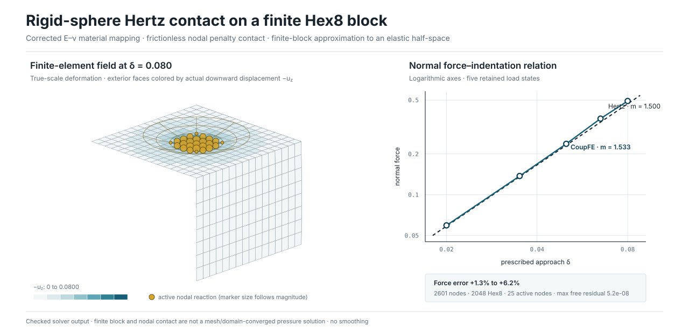
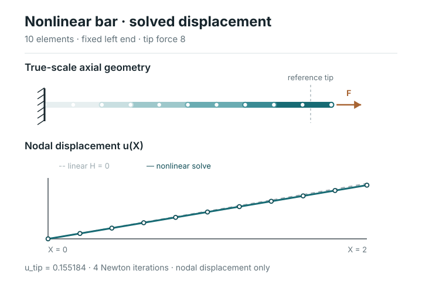
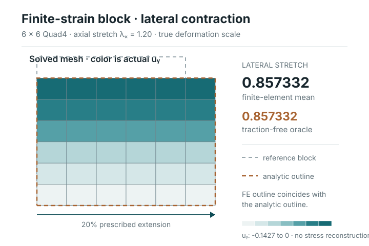
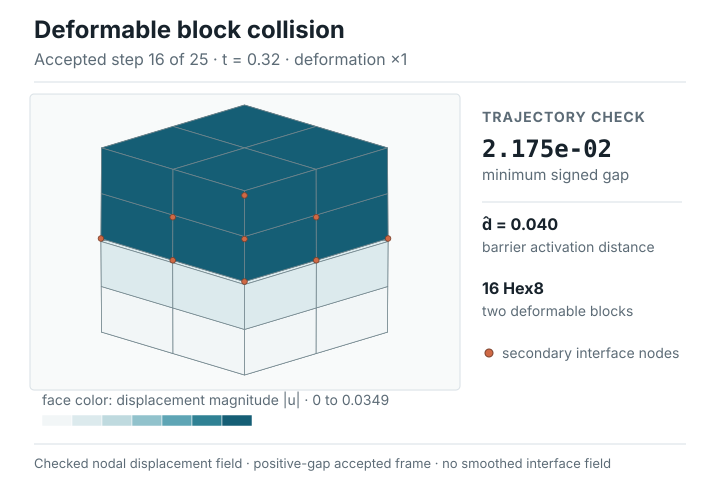

{kind=link}
Operator
Evaluate locally
residual(U, state, t, dt)tangent(U, state, t, dt)commit(U, state, t, dt)
Teng Zhang · active alpha · v0.0.1
CoupFE is a small, tested scaffold for developing custom operators, generated elements, contact formulations, and standalone solver paths. Applications keep ownership of model setup, mesh-tool adapters, domain semantics, and output policy.

The core contract
Bulk elements, contact, inertia, and loads contribute through the same interface. The assembly and solve layers do not need to know their application-specific meaning.
Operator
residual(U, state, t, dt)tangent(U, state, t, dt)commit(U, state, t, dt)Assembly
R(U) = Σ Ro(U)K(U) = Σ Ko(U)
Drivers
Newton increments, line search, implicit dynamics, and explicit linear-solver policy.
Supported smooth generated elements derive consistent tangents by complex-step differentiation. Analytic and semismooth operators keep their own separately tested tangent paths.
Compiled elements keep trial evaluation separate from committed state. Generic accepted-step orchestration is not yet complete for every failure and multi-increment path.
Core supplies the mesh-agnostic transformation
U = Pq + U0 for serial quasistatic solves. Applications
construct the physical relations; MPI and dynamics coverage is not claimed.
Execution and interoperability
Supported weak forms can produce Fortran for CoupFE's standalone compiled-element runtime. Selected formulations can also be exported as Abaqus/Standard UEL source; Abaqus owns that external procedure and its execution context.
Verify the residual, state schema, ordering, and emitted source.
Primary CoupFE path
CoupFE compiles and calls coupfe_element_rk and, when
available, coupfe_element_r through f2py. Serial and scoped
PETSc/MPI solvers use this native ABI without Abaqus procedure data.
Optional external export
Selected element declarations can emit source for an external Abaqus job. CoupFE's narrow in-process adapter supports focused normal-static parity checks only; it is not an Abaqus procedure host.
Evidence boundary: comparing a CoupFE-native kernel with the corresponding Abaqus-interface export can expose generation, sign, ordering, state-transfer, and ABI drift. Because both share a formulation, this is an implementation-consistency check—not independent physical validation of the equations, parameters, or model.
Solver snapshots
Each figure is drawn from a checked CoupFE solve at true scale — deformed geometry, displacement, and contact reactions, not rendered illustrations.

1-D nonlinear mechanics
Nonlinear bar 10 Line2 elements · 4 Newton iterations · the tip displacement matches the nonlinear analytic limit. Runner
2-D finite-strain mechanics
Neo-Hookean block Computed lateral stretch0.857332 matches the traction-free oracle to 1.04e-15.
Runner

3-D dynamics + contact
Block collision · signed-gap contact Minimum signed interface gap2.175e-02 (collision) and 2.503e-02 (friction run) stay positive; smoothed-friction slip ratio 0.65 of the frictionless run.
Runner
Also checked: the rigid-sphere Hertz run reaches log–log slope 1.533 versus the analytic 1.500, force ratio 1.01–1.06 (error +1.3% to +6.2%); curved-annulus convergence rate 2.02 versus the expected 2. Full per-load numbers, commands, and claim boundaries live in evidence.json and the linked runners on GitHub.
A deliberate boundary
The application remains responsible for the engineering model around those contracts. This keeps Core small without treating integration work as trivial. No general mesh-software adapter is part of Core.
Core does not provide a general CAD, Gmsh, DMPlex, Abaqus-input, or results-file adapter.
Read the complete capability matrixCore owns
Applications own
Distributed finite elements
These solver-backed programs cover nonlinear bulk mechanics, contact, dynamics, and friction, with serial-versus-rank diagnostics where documented. They are worked examples, not launch checks, but remain example-level evidence: no retained final-revision multi-rank qualification, scaling record, large-scale benchmark, or general performance claim is published.
Inspect MPI programsStart with the small path
The base package needs NumPy and SciPy. Compiled elements need a compatible Fortran toolchain; code generation and PETSc/MPI are optional environments. This static website does not run CoupFE in the browser.
git clone https://github.com/tengzhang48/CoupFE.git
cd CoupFE
pip install -e ".[dev,runtime,codegen,performance]"
python examples/linear_bar/run.py
python -m pytest -q -m "not slow"Public record
This is alpha research software. Complete finite-element coverage, production engineering qualification, and a release-grade scaling record are not claimed.
{kind=link}
{kind=link}
{kind=link}